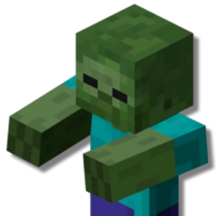

Сквиллеры
Выжившие после апокалипсиса будут ближе к неолиту, чем к современности.
Сквиллеры относятся к коренным жителям Предвещания. Они внешне очень похожи на людей, но со своими отличиями: цвет кожи, который у сквиллеров почти всегда ближе к серому, светящиеся глаза, плоское лицо с почти не выступающим носом. Кожа на лице сквиллеров восприимчива к свету, что вызывает раздражение, поэтому они почти всегда носят маски. Сквиллеры адаптированы к жизни в условиях руин и свалок: способны питаться мусором, невосприимчивы к радиации, имеют талант собирать различные инструменты из случайного мусора. Большинство сквиллеров по человеческим меркам являются безрассудными придурками разной степени идиотизма, однако личности с совершенно нормальным складом ума тоже встречаются.
Особенности сквиллеров
Тип существа. Гуманоид.
Срок жизни. Не считали.
Кожа. Обычно бледная, почти серая, но оттенки могут быть любые. Кожа на лице особенно чуствительна к солнечному свету, поэтому сквиллеры чувствуют постоянную
Глаза. Полностью дноцветные, немного светятся в темноте. Цвет может быть любой.
Волосы. Только если где-то раздобыли парик.
Вес. От 50 до 110 килограмм.
Рост. От 150 до 200 сантиметров.
Дополнительные детали. У сквиллеров опционально могут быть металлические шипы, рога или когти, которые образовались из неиспользованного организмом съеденного металла.
Умения сквиллеров
Увеличение характеристик. Либо значение одной характеристики по вашему выбору увеличивается на 2, а другой на 1, либо значение трёх различных характеристик по вашему выбору увеличивается на 1.
Скорость. Ваша базовая скорость ходьбы составляет 30 футов.
Сквиллерский метаболизм. Сквиллеры способны есть и переваривать буквально что угодно, и все эти вещества так или иначе используются организмом. Сила челюстей и прочность тканей позволяют без вреда здоровью пережёвывать даже металл или стекло. Вы сами решаете, вкусно вам было, или нет. Также вы получаете невосприимчивость к состоянию Отравленный.
Кустарная интуиция. Совершая проверку при применении какого-либо инструмента, вы можете попытаться положиться на интуицию. Полагаясь на интуицию, вы совершаете эту проверку с преимуществом, но не добавляете к результату Бонус мастерства, даже если владеете этим инструментом.
Наследие мусорщика. Вы получаете владение Инструментами оружейника, если не владеете ими. Вы начинаете игру с предметами Инструменты оружейника и Мешок оружейного лома, если выбранная вами предыстория не предоставляет их.
Размер. Ваш размер — Средний.